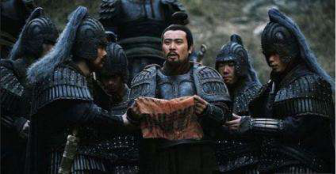
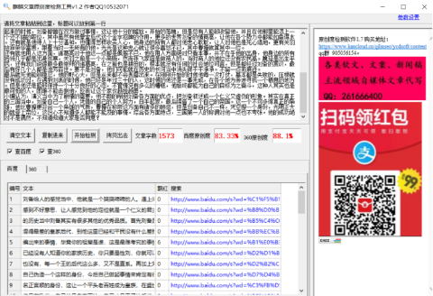

《三国演义》中的误解，刘备成事的主要原因，成功绝非偶然
刘备给人的感觉当中，他就是一个哭哭啼啼的人。遇上问题就是一顿哭，最后让对方都感到不好意思，让人感觉到他的定位就是一个仁义的君主，身体上都比较孱弱。在三国的历史当中刘备其实有很多其他的优秀品质。
首先刘备是大汉皇家后代，但是是那种混得最差的皇家后代，到他这里已经和平民没有什么差别，甚至有的认为这是刘备自己编出来的事情，毕竟你的祖辈是谁，这是最难考究的事情，又经过几代人的稀释，基本已经没有人知道你的家族历史，你只要是性刘，你就可以说你是皇室后代。
这一点毛病也没有，每一个王的后代这么多，又不是直系。再加上刘备是一个十分有胆色的人，为自己伪造一个这样的身份，今后自己做起事情来肯定有很大的便利。第一就是他有一个名正言顺的身份，这让一个平头老百姓成为皇族，在盛世之中这个身份可能用处不大，但是在乱世。自己就是皇家正统，自己才是天子的后代，其他的人都是乱臣贼子。这是很重要的一个点：师出有名。
还有就是刘备的武艺高强，能够上阵杀敌。虽然在三国演义当中他有这方面的描写，甚至还有三英战吕布这种场景，但是都是为吕布这个人做陪衬，他自己更是被压着打，差点丧命，还是关羽从中帮他解围。他虽然是政权奠基者，但在父辈哪里他没有得到一点帮助，更多的是他自己努力的结果，从一无所有到最后天下三分，自己立足一方。
自己亲身经历过大大小小的各种战役，从开始的黄巾起义，到最后白帝托孤他的大半生都在征战，没有几把刷子谁也不会相信。虽然说他不可能比得上那种上阵杀敌的将军，但是半生的征战，在统兵和个人的能力上是绝对的出色，在三国演义当中为了凸显他其他方面的特点，往往都把这一点忽略掉。
其次就是他的情商，他的情商在整个三国当中都是佼佼者，早年的时候他飘忽不定，投靠过多个不同势力，甚至有的势力掐起来的时候，刘备都曾在双方做过事情，这让他十分的尴尬。开始的落魄，但是总有人能够收留他，并且在他那里能混上一个还不错的职位，其中虽然有他皇室后代这个金字招牌的作用，更多的世界刘备的情商高，让他在各个势力中都能如鱼得水。
还有就是他待人上十分温和，也懂得怎样收买人心，他身边的所有人都对他忠心耿耿，让人对他也是死心塌地，更有关羽放弃荣华富贵，跟着当时一无所有的他。光光是这种忠心就让很多喜怒不已，其中曹操就算其中一位。
还有就他用人这方面，诸葛亮对于他这一点都是佩服不已，他在用人方面绝对只看本事，并不在乎他的出身，他身边的所有将领几乎都是出身贫寒，关羽之前是一个小商贩，然而张飞家庭是做商人的，当时商人的地位还没有农民高。魏延是出生平民，还有我们说得最多最崇拜的诸葛亮，在之前也是耕田的，根本就没有任何的社会地位可言，但是都经过刘备的赏识，最后有好几个人都是流芳百世。
要不是刘备，他们可能就在历史的长河当中消失得干干净净。不留一点而痕迹。
最后就死他能够隐忍，他的野心大，但是从来都不会表露出来。在刚刚开始的时候他每一次打仗，基本都是失败的，压根就没有成功过，在遇到刘表的时候，他已经是年过三十的人，这时候的他还是一事无成，在各个地方奔波寻找一个栖息的地方。但是他还是能够保持一个十分良好的心态，不管情况有多么的糟糕，他始终都能为自己的目标为之奋斗，这种人其实也是最可怕的人，困难不能击倒他，反而让这个家伙越挫越勇。

小编认为，演义当中为了剧情的需要，他不断的削弱刘备各方面的优点，把刘备叙述成一个仁义又虚伪的形象。其实在真正的三国当中，刘备自己一个人，凭借的自己的个人努力，白手起家，最后缔造了一个自己的帝国。这一个不可多得真正的枭雄，他比曹操更符合一个枭雄的气质，曹操在称帝这方面有诸多的顾忌，但是刘备自己不一样，凭空捏一个身份，光明正大的就登上帝位，这份心不知道多人都能不能及的事情。综合各方面特点，三国第一人的称谓对他一点也不夸张。他的成功绝对不是偶然，不知道知道大家是否同意？
